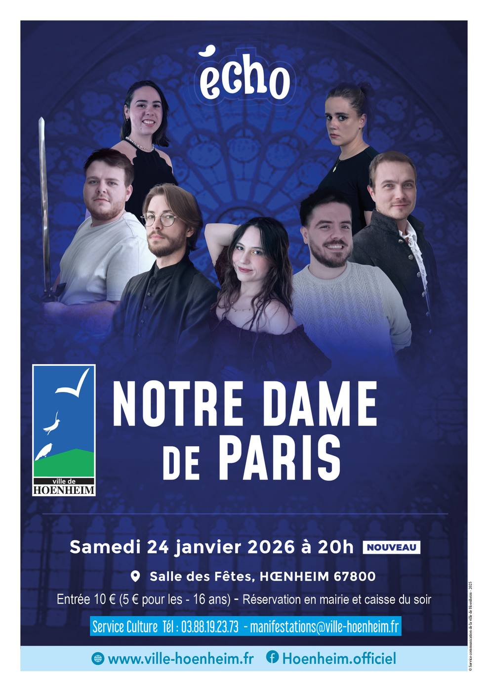

- Cet événement est terminé
Notre Dame de Paris – La comédie musicale
24 janvier à 20 h 00 min - 22 h 00 min
Navigation de l'événement

📅 Samedi 24 janvier – 20h
📍 Salle des fêtes de Hoenheim — 16 rue des Vosges
Durée du spectacle environ 2h. Entracte avec buvette et petite restauration par l’antenne locale de la Croix-rouge.
🎶 Interprété par Écho
Un concert à ne surtout pas manquer !
Revivez les plus grands titres de Notre Dame de Paris lors d’un spectacle exceptionnel proposé par le groupe vocal Écho.
Laissez-vous emporter par l’histoire intense et bouleversante de Quasimodo, Esmeralda et Frollo. Une fresque musicale où se mêlent amour impossible, passion, jalousie, drame et espoir.
Une soirée riche en émotions vous attend :
• Chanteurs, chœur, danseuses et mise en scène
• Costumes, décors et ambiance immersive
• Un grand classique à partager en famille ou entre amis
🎟 Tarifs
• 10 €
• 5 € pour les moins de 16 ans
Prévente des billets en Mairie de Hoenheim : Service Animation — 03 88 19 23 73 ou manifestations@ville-hoenheim.fr
Une caisse du soir sera ouverte à partir de 19h30, dans la limite des places disponibles.
Réservez, vibrez, partagez
Une expérience artistique et musicale à vivre pleinement avec la troupe Écho.
Réservez dès maintenant — places limitées !
Téléchargez la plaquette de présentation du spectacle Notre Dame de Paris par la troupe ECHO